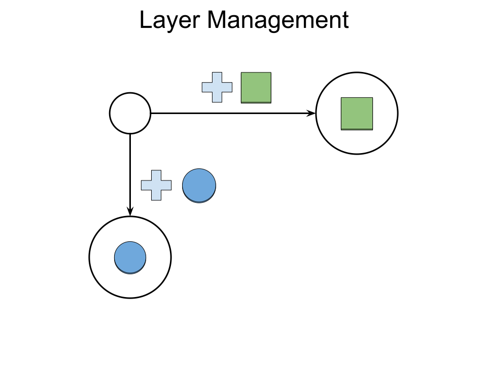
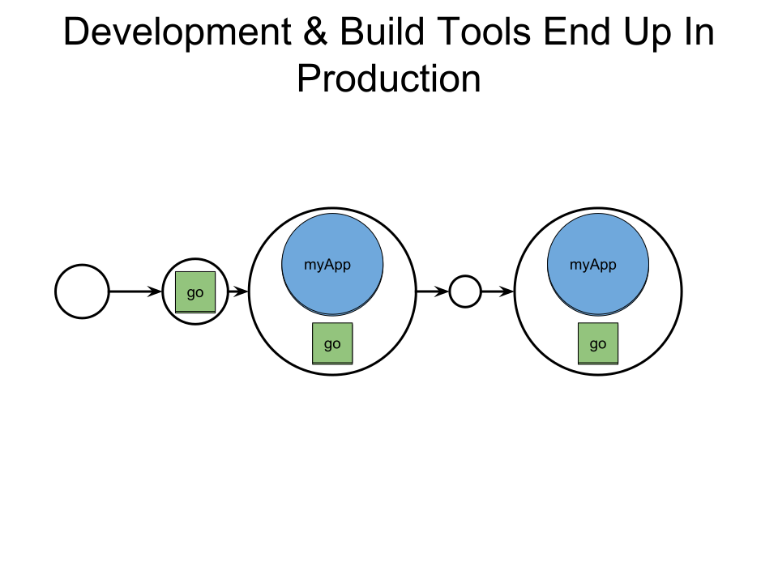
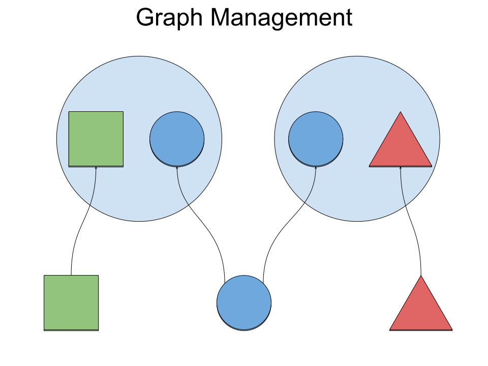
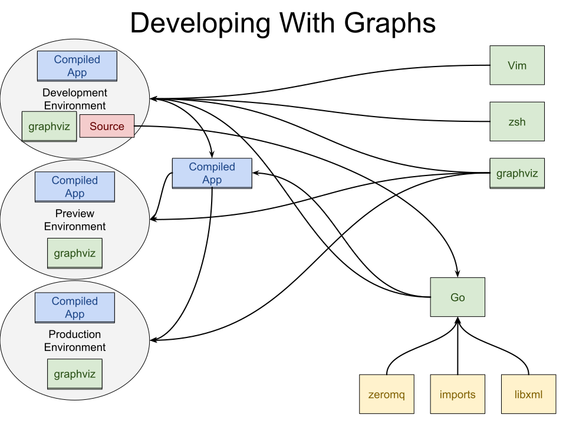
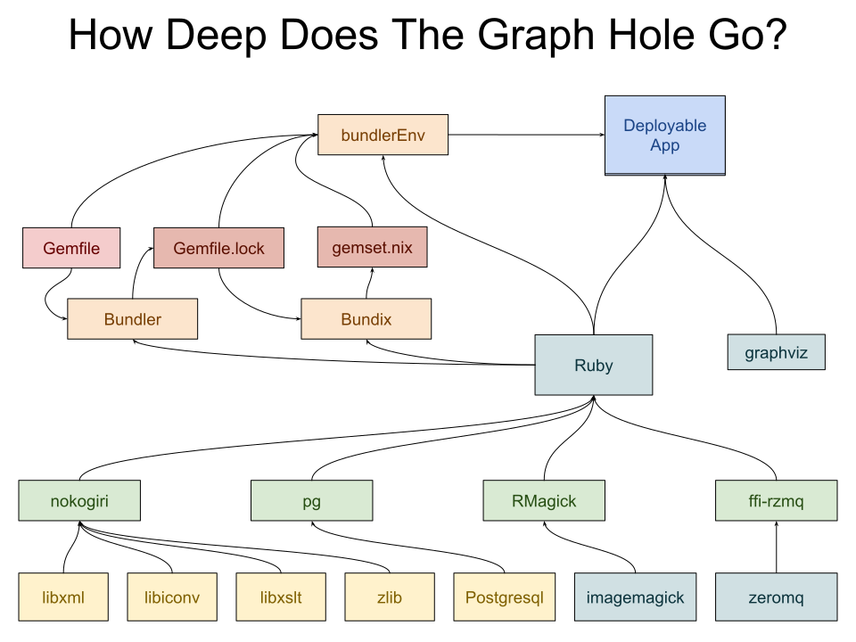
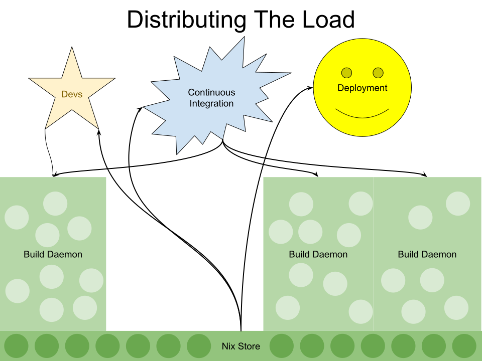

Introduction To Nix (Part I)
July 2018
by Michael Fellinger

A little history

The present



Intermezzo





Functional programming
Based on lambda calculus by Alonzo Church (1930s).
Abstraction based on functions (lambda) and reduction.
- No side effects:
- No mutable variables
- No loops
The Nix Programming Language
Some history
The Nix package manager was developed by Eelco Dolstra as part of his PhD research in 2004.
Nix: A Safe and Policy-Free System for Software Deployment
The core of the language has been improved in the following 14 years, eventually leading to the creation of NixOS, an operating system entirely built using Nix.
Eelco Dolstra is still the head of the project and recently left the academic world to work at a Nix consultancy.
Nix is…
- Reliable
- Reproducible
- Great for developers
- Multi-user, multi-version
- Source/binary model
- Portable
Reliable
Nix’s purely functional approach ensures that installing or upgrading one package cannot break other packages.
This is because it won’t overwrite dependencies with newer versions that might cause breakage elsewhere.
It allows you to roll back to previous versions, and ensures that no package is in an inconsistent state during an upgrade.
Reproducible
Nix builds packages in isolation from each other.
This ensures that they are reproducible and don’t have undeclared dependencies.
So if a package works on one machine, it will also work on another.
Great for developers
Nix makes it trivial to set up and share build environments for your projects, regardless of what programming languages and tools you’re using.
For instance, running the command
nix-shell '<nixpkgs>' -A firefox
gives you a Bash shell in which all of Firefox’s build-time dependencies are present and all necessary environment variables are set.
Multi-user, multi-version
Nix supports multi-user package management:
Multiple users can share a common Nix store securely, don’t need to have root privileges to install software, and can install and use different versions of a package.
Source/binary model
Conceptually, Nix builds packages from source, but can transparently use binaries from a binary cache if available.
This combines the flexibility of source package management with the convenience of binary package management.
Portable
Nix runs on Linux, macOS and other systems.
Nixpkgs, the Nix Packages collection, contains ten-thousands of packages, many pre-compiled.
The Syntax
Primitive Types
- Integer
- Bool
- Path
- String
- Float
Integer
nix-repl> builtins.typeOf 42
# "int"
nix-repl> 21 + 21
# 42
nix-repl> 21 - 42
# -21
nix-repl> 21 * 2
# 42
nix-repl> 41 / 2
# 20
Boolean
nix-repl> builtins.typeOf true
# "bool"
nix-repl> builtins.typeOf false
# "bool"
nix-repl> true && false
# false
nix-repl> true || false
# true
Path
nix-repl> builtins.typeOf /tmp
# "path"
nix-repl> /tmp + /build
# /tmp/build
nix-repl> ./.
# /home/manveru/github/manveru/scylla
nix-repl> ./..
# /home/manveru/github/manveru
String
nix-repl> builtins.typeOf "hoge"
# "string"
nix-repl> "hi" + " there"
# "hi there"
"hi ${toString 2}"
# "hi 2"
Float
nix-repl> builtins.typeOf 3.1415
# "float"
nix-repl> 1.6 + 1.4
# 2.9
nix-repl> 41.0 / 2
# 20.5
IEEE 754 FTW
Composite Types
- Set
- List
- Functions (lambda)
Set
nix-repl> builtins.typeOf {}
# "set"
nix-repl> { "a b" = "c"; count = 2; }
# { "a b" = "c"; count = 2; }
nix-repl> { count = 2; }.count
# 2
nix-repl> { "a b" = "here"; } // { count = 2; }
# { "a b" = "here"; count = 2; }
List
nix-repl> builtins.typeOf []
# "list"
nix-repl> [42 "a b" (3 + 6) [2 3 4] {x = 2;}]
# [ 42 "a b" 9 [ ... ] { ... } ]
nix-repl> builtins.elemAt [[2 3 4]] 0
# [ 2 3 4 ]
nix-repl> builtins.length [1 2 3]
# 3
Here we see first signs of lazyness, the list is only evaluated at the top level.
Lambda
nix-repl> builtins.typeOf (x: x)
# "lambda"
nix-repl> x: x + x
# «lambda @ (string):1:1»
nix-repl> (x: x + x) 21
# 42
nix-repl> let hi = {name, place}: "Hi ${name} in ${place}!";
in hi { name = "Michael"; place = "Austria"; }
# "Hi Michael in Austria!"
nix-repl> let inc = {n, m ? 1}: n + m;
in inc { n = 2; }
# 3
Functions are also lazy, so you can use them as first-class values and pass them around or assign them to variables.
Builtin lambdas
The builtins set contains a lot of lambdas that are used to fetch git repos or
tarballs, bootstrap systems, flow control, and more.
nix-repl> builtins.attrNames builtins
# [ "abort" "all" "any" "attrNames"
"attrValues" "baseNameOf" "catAttrs" "compareVersions"
"concatLists" "concatStringsSep" "currentSystem" "currentTime"
"deepSeq" "derivation" "dirOf" "div" "elem"
"elemAt" "false"
"fetchGit" "fetchMercurial" "fetchTarball" "fetchurl"
"filter" "filterSource" "findFile" "foldl'" "import"
"fromJSON" "toJSON" "toXML"
"functionArgs" "getAttr" "getEnv" "hasAttr" "hasContext"
"isAttrs" "isBool" "isFloat" "isFunction" "isInt"
... **
Summary
- Packages are defined as Nix expressions
- Atomic upgrades and rollbacks
- Several versions of the same package in the same system
- Unprivileged package installation
- Manage user environments (dotfiles, packages, etc.)
- Provides isolated environments
- Reproducible builds from source
- Cache available to get pre-compiled packages
- Safe Garbage collection
- Over 40.000 up-to-date packages with 830 maintainers